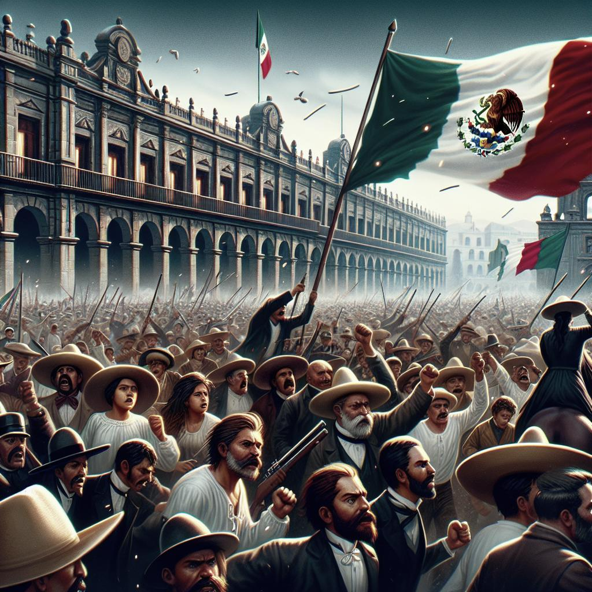
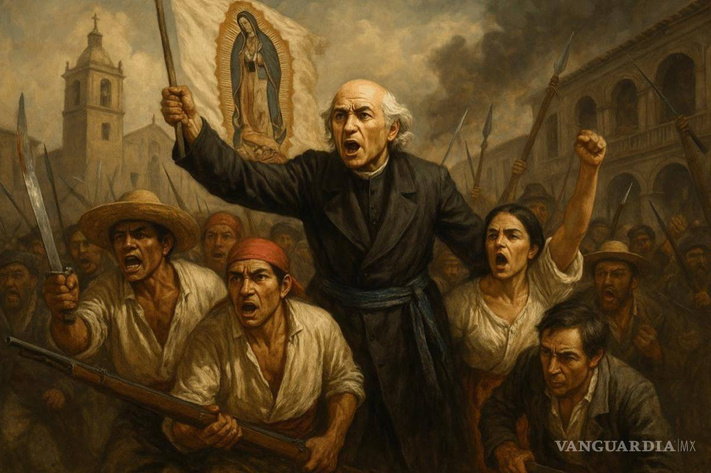
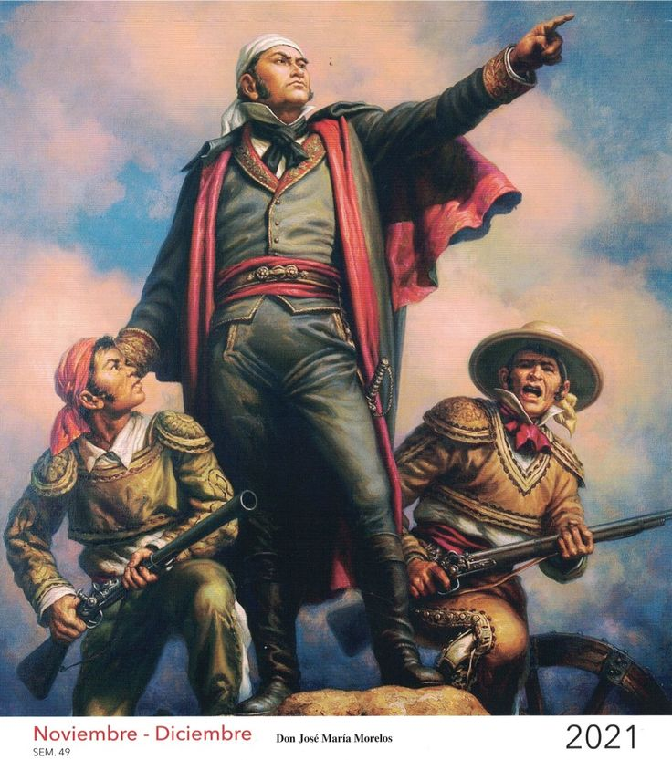
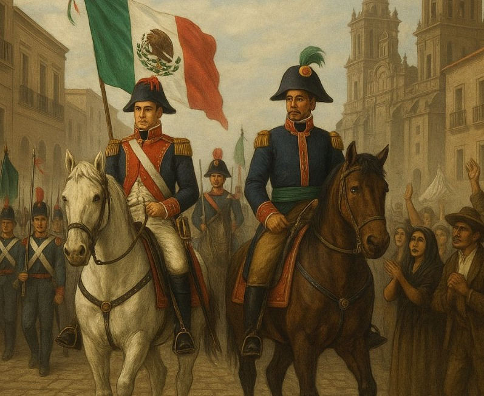
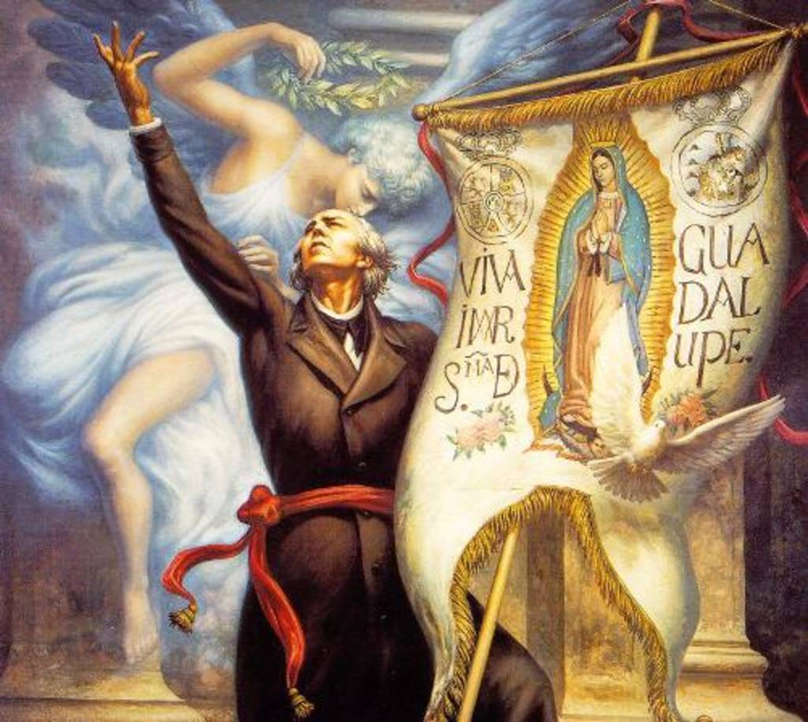
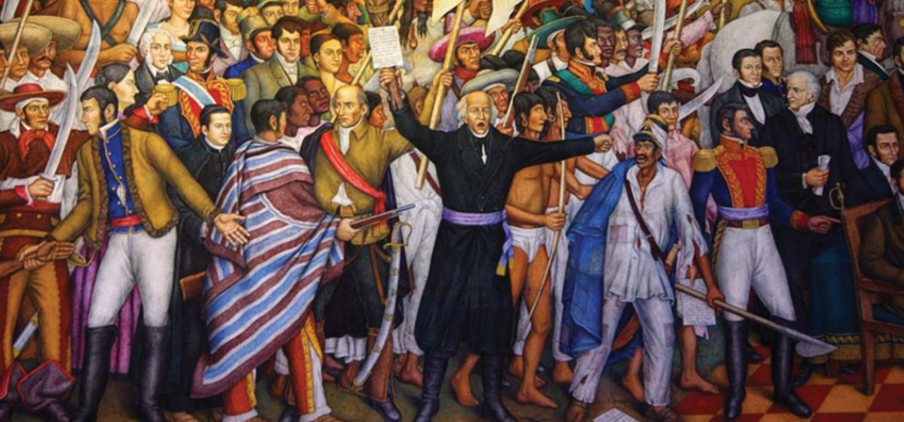

Conoce los acontecimientos que formaron nuestro país

México tiene una historia llena de cambios políticos, económicos y sociales. Durante el siglo XIX ocurrieron acontecimientos que transformaron la vida de sus habitantes y la manera de organizar el gobierno. Entre los más importantes se encuentran la Independencia, el desarrollo del liberalismo y las intervenciones extranjeras.
Estos procesos estuvieron relacionados con la búsqueda de libertad, la creación de nuevas leyes y la defensa del territorio nacional. Conocerlos permite comprender cómo se formó México y por qué algunos de sus problemas y principios políticos siguen siendo importantes en la actualidad.




La Independencia de México fue un proceso histórico que comenzó el 16 de septiembre de 1810 y terminó en 1821. Durante esos años, diferentes grupos lucharon para terminar con el dominio español y conseguir que el territorio pudiera gobernarse de manera independiente.
En aquella época existían grandes diferencias entre los grupos sociales. Los españoles peninsulares tenían importantes privilegios, mientras que muchos criollos, indígenas y mestizos enfrentaban limitaciones y desigualdades. También había problemas económicos, impuestos y descontento con las autoridades coloniales.
Las ideas de libertad e igualdad, junto con los cambios políticos que sucedían en otros países, influyeron en el inicio del movimiento. Miguel Hidalgo llamó al pueblo a levantarse en armas en septiembre de 1810, acontecimiento conocido como el Grito de Dolores.

El 27 de septiembre de 1821, el Ejército Trigarante entró en la Ciudad de México. Este acontecimiento representó la consumación de la Independencia. Sin embargo, el nuevo país tuvo que enfrentar problemas económicos, desacuerdos políticos y dificultades para establecer un gobierno estable.
La Independencia fue importante porque terminó con el gobierno colonial español y permitió el nacimiento de México como país independiente. También abrió una nueva etapa de cambios y debates sobre cómo debía organizarse la nación.
El liberalismo fue una corriente de pensamiento que defendía la libertad individual, la igualdad ante la ley y la participación de los ciudadanos en las decisiones políticas. En México adquirió importancia después de la Independencia, especialmente durante los conflictos políticos del siglo XIX.
Los liberales buscaban establecer un gobierno basado en leyes y limitar los privilegios de ciertos grupos. También defendían que el país tuviera una Constitución que estableciera los derechos de las personas y la forma en que debían funcionar las instituciones.
Estas ideas provocaron diferencias con los conservadores. Mientras los liberales promovían cambios en la organización política y social, muchos conservadores defendían mantener varias instituciones y tradiciones existentes. Las diferencias entre ambos grupos provocaron enfrentamientos y periodos de inestabilidad.
Un acontecimiento importante fue la Constitución de 1857, que estableció derechos y principios liberales. Después se impulsaron las Leyes de Reforma, que transformaron las relaciones entre la Iglesia y el Estado y modificaron el funcionamiento de algunas instituciones.
Benito Juárez fue una figura destacada de este proceso. Durante su gobierno defendió la República y las reformas liberales. Estos cambios contribuyeron a establecer principios jurídicos que influyeron en la organización del México moderno.
El liberalismo mexicano fue importante porque ayudó a definir la relación entre los ciudadanos, las leyes y el gobierno. Sus ideas influyeron en la formación de las instituciones políticas del país.
Durante el siglo XIX, México enfrentó varias intervenciones extranjeras. Después de conseguir su Independencia, el país tenía dificultades económicas, problemas políticos y un gobierno que todavía buscaba consolidarse. Estas condiciones hicieron más difícil defender el territorio y responder a las presiones de otros países.
Francia y Estados Unidos tuvieron conflictos con México por diferentes motivos. Entre ellos se encontraban las reclamaciones económicas, las deudas, los intereses territoriales y la intención de aumentar su influencia en la región.
Uno de los acontecimientos más conocidos fue la Batalla de Puebla, ocurrida el 5 de mayo de 1862, cuando el ejército mexicano derrotó a las fuerzas francesas. Aunque esta victoria fue importante, la intervención continuó y los franceses llegaron a ocupar la capital.
Durante el Segundo Imperio, los republicanos encabezados por Benito Juárez continuaron defendiendo la República. Finalmente, el Imperio terminó en 1867 y se restableció el gobierno republicano.
Estos conflictos demostraron la importancia de defender la soberanía nacional. También mostraron cómo los intereses extranjeros y los problemas internos pueden afectar la economía, la política y la vida de una sociedad.
Instituto Nacional de Estudios Históricos de las Revoluciones de México
La Independencia, el liberalismo y las invasiones extranjeras fueron procesos importantes para la formación de México. La Independencia permitió terminar con el dominio español, el liberalismo impulsó cambios en las leyes y en el gobierno, y las intervenciones extranjeras mostraron los problemas que enfrentaba el país para defender su territorio.
Estudiar estos acontecimientos nos ayuda a entender que México se formó mediante diferentes luchas, decisiones políticas y transformaciones sociales. También permite reconocer la importancia de la libertad, las leyes, la soberanía y la participación de los ciudadanos.